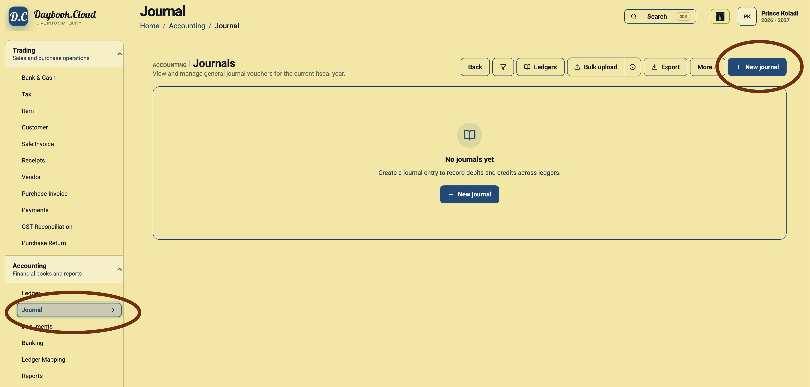
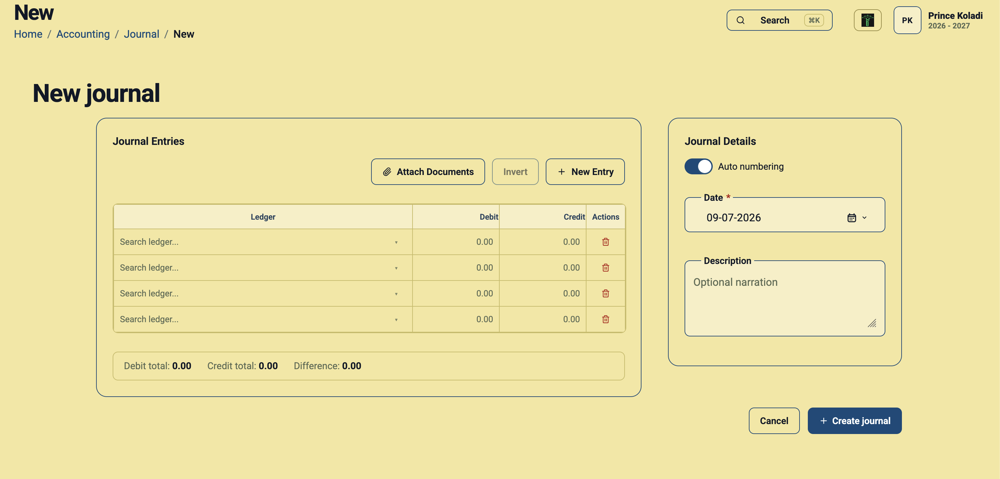

Double-entry accounting is the discipline of recording every financial transaction in at least two ledger accounts: one side as a debit and the other side as a credit. The basic rule is simple: total debits must equal total credits. When this balance is maintained, each journal entry explains both what changed and where the value came from.
For example, when a business pays rent from its bank account, rent expense increases and bank balance decreases. A double-entry journal records both effects together. This is what makes ledgers useful for financial statements, audits, tax review, and day-to-day business decisions.
Why a double-entry ledger is important
- It keeps accounting records balanced: A journal cannot be complete if the debit and credit totals do not match.
- It improves traceability: Each transaction shows the ledgers affected by the business event, instead of leaving a one-sided note.
- It supports reliable reports: Profit and loss, balance sheet, ledger summaries, and other reports depend on properly balanced entries.
- It reduces correction work: Reviewing the difference between debit and credit totals helps detect missing or incorrect lines before posting.
- It creates a clearer audit trail: Dates, narration, ledger rows, amounts, and attachments keep the reason for the entry close to the transaction.
Common uses for manual journals
Daybook.Cloud can connect invoices, payments, receipts, and ledgers, but a manual journal is useful when you need to record an accounting adjustment directly. Typical examples include expense allocations, opening balances, depreciation, provisions, corrections, transfers between ledgers, and accountant-approved year-end adjustments.
Before creating a journal
Prepare the accounting details before you start. This keeps the entry clean and avoids changing ledgers after the journal is created.
- The transaction date that should appear in the books.
- The ledgers to debit and credit.
- The debit and credit amounts for each ledger line.
- A short narration explaining the reason for the journal.
- Supporting documents such as accountant notes, bills, approvals, or working papers.
Step 1: Open the Journals page
In Daybook.Cloud, go to the left navigation and open Accounting. Select Journal. The Journals page lists journal vouchers for the current fiscal year and provides actions for ledger review, bulk upload, export, and creating a new journal.
Click New journal at the top right. If no journals have been created yet, you can also use the New journal button in the empty-state panel.

Step 2: Review auto numbering
The Auto numbering switch appears in Journal Details. Keep it enabled when Daybook.Cloud should assign the next journal number in sequence. This is the preferred workflow for routine journal entries because it helps preserve a consistent voucher series.
Turn auto numbering off only when your accounting process requires an approved manual number, such as during migration or when continuing a previous numbering system.
Step 3: Select the journal date
Use the Date field to choose the accounting date for the journal. This date controls where the entry appears in the financial year and period reports, so it should match the approved transaction or adjustment date.
Step 4: Add debit and credit ledger lines
In the Journal Entries table, search for the ledger in each row and enter the amount in either the Debit or Credit column. A ledger line should normally have an amount on one side only.
Use New Entry when the journal needs more rows. You can remove a row with the delete action if it was added by mistake.

Step 5: Confirm that debits equal credits
The totals panel shows Debit total, Credit total, and Difference. Before creating the journal, review the difference. A proper double-entry journal should have a difference of 0.00.
If the difference is not zero, check whether a ledger is missing, an amount was entered on the wrong side, or one line uses an incorrect value.
Step 6: Add a description and documents
Use the Description field for a short narration such as the reason for the adjustment, transfer, correction, or allocation. Clear narration helps accountants and business owners understand the entry later without searching through separate notes.
Use Attach Documents to keep supporting files with the journal. Attachments are useful for approvals, calculations, invoices, bank advice, or accountant working papers.
Step 7: Create the journal
After selecting the date, ledgers, amounts, narration, and attachments, review the totals one final time. Click Create journal when the entry is balanced and ready to record.
A simple double-entry example
Assume the business pays office rent of 10,000 from the bank account. The journal can be recorded as:
- Debit: Rent Expense - 10,000
- Credit: Bank Account - 10,000
The debit total and credit total both equal 10,000, so the difference is 0.00. The rent ledger now shows the expense, and the bank ledger shows the reduction in cash.
Good practices for cleaner journals
- Use the most specific ledger available instead of posting everything to broad adjustment accounts.
- Keep narration short but meaningful.
- Attach the document or calculation that justifies the entry.
- Review the date carefully when entering back-dated or year-end adjustments.
- Do not force a journal to balance with an unexplained suspense line unless your accountant has approved that treatment.